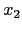

Consider the linear constraints
- Sketch the feasible set in a 2-dimensional plot.
- Add slacks and to place the constraints in standard form.
- Determine whether columns of the standard form corresponding to
each of the following sets of variables form a basis:
 , , , .
, , , .
- For each set that does form a basis in part 1c, determine the corresponding basic solutions and classify it as feasible or infeasible.
- Identify each solution of part 1d on your plot of part 1a.
The following tableau represents a linear program in standard form:
- (10 points) Perform one simplex pivot on this tableau.
- (5 points) What would you do next?
Consider the following tableau for a standard form linear program:
On the next pivot  enters the basis. The corresponding pivot matrix is
- (6 points) What is the basic feasible solution obtained as a result of this pivot?
- (7 points) Give a linear constraint that must be satisfied by , , and for the new solution to be optimal.
- (7 points) What three linear constraints must , , and satisfy for the next tableau to be in unbounded form?
The variables in the following linear programming problem have
upper bounds:
The current basic feasible solution has and both nonbasic at their upper bounds.
- (3 points) What are the values of the basic variables at the current BFS?
- (3 points) Which variable should enter the basis?
- (3 points) What is the corresponding simplex direction?
- (3 points) Which variable should leave the basis?
- (3 points) What steplength should be chosen in the simplex direction?
- (5 points) Plot the feasible region, and hence show that this move along the simplex direction leads to the optimal solution.
A coal-fired electric plant burns three types of coal to drive steam turbines in order to produce electricity. Federal standards require that emissions from the furnace contain no more than 2500 parts per million (ppm) of sulfur oxide and that no more than 40 kilograms per hour (kg/hr) of particulate matter (smoke) be emitted from the stack. The following table gives the amounts of both pollutants that result from burning the three types of coal.
| Sulfur Oxide in | Particulates Emitted | |
| Coal | Stack Emissions | per Ton of Coal Burned |
| Type | (ppm) | (kg/hr) |
| A | 1200 | 1 |
| B | 3300 | 2 |
| C | 2100 | 5 |
Burning one ton of coal A results in 22,000 lb of steam, whereas burning one ton of coal B or coal C, respectively, produces 27,000 or 34,000 lb. The furnace has a capacity for burning 25 tons per hour of any mixture of the three coals. Also, the sulfur oxide emissions that result from burning a mixture of coals is equal to a weighted average of the parts-per-million emissions of the individual coals, where each weight is equal to the proportion of that coal used in the mixture.
Formulate a linear programming model for operating the electric plant so as to maximize the amount of steam generated per hour.